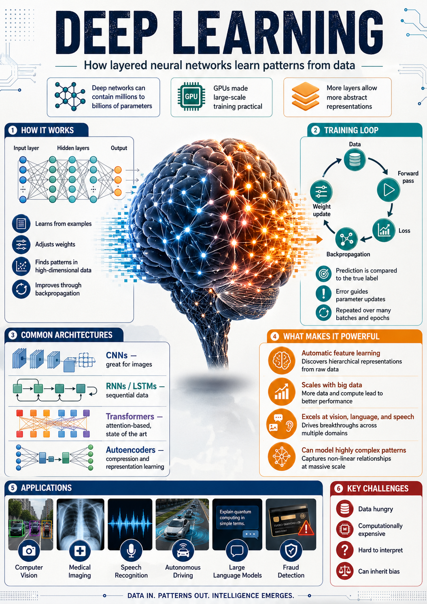

Deep learning · 101 for planners
Deep learning, in plain language.
You don't need a CS degree to use this site. You only need a working mental model of what these models do well, what they get wrong, and why we trusted them with crosswalks. Here it is in five minutes.
Start here
What is deep learning, really?
Deep learning is a learning system that improves by example. You show it a few thousand photos of crosswalks (with the answer key), and it gradually figures out what crosswalks look like, including the cases you couldn't articulate as a rule.
The "deep" part refers to the model's many internal layers. Each layer notices something a little more abstract than the last: edges → shapes → patterns → "this region is probably a zebra crossing." By the end, the model has built a stack of intuitions, not a checklist.
Think of it like training a junior planner. You don't write down a rule for "what counts as a faded crosswalk." You walk them around for a week with a clipboard, and after a few hundred examples they just know. Deep learning works the same way: the photos are the walks, the labels are the clipboard.

How it differs from traditional GIS rules
A GIS rule is explicit: "slope > 8% = steep, color it red." It works perfectly when the world matches the rule. It breaks the moment the world doesn't.
Deep learning is the opposite. It's vague where rules are precise, and resilient where rules are brittle. It learns patterns the analyst hasn't articulated yet, which is exactly why it's good at messy, photographic data like aerial tiles and Street View frames.
Where each one belongs
- Rules: when the data is clean and the logic is well understood (zoning queries, buffer overlays, slope thresholds).
- Deep learning: when the data is unstructured (photos, audio, free text) and the patterns are visual or contextual.
- Both, usually. Deep learning generates the layer; rules clean it up and put it in the right place on the map.
Why for streetscapes
Aerial imagery and Street View are the most abundant urban datasets we have.
Cities don't have curated, up-to-date crossing inventories. They do have free or low-cost aerial tiles and a public Street View archive. Deep learning is the bridge between those piles of pixels and a layer a planner can actually use.
Once the model is trained, refreshing the layer is roughly as expensive as the imagery itself, far cheaper than commissioning a windshield survey, and consistent across neighborhoods that otherwise get audited at very different cadences.
The honest framing: deep learning doesn't replace fieldwork. It directs fieldwork. The model says "these 40 intersections look suspicious." A planner walks five of them. That's the whole game.
Two flavors we use
Different questions, different model shapes.
The two model families on this site answer fundamentally different questions about an image. Knowing which is which makes the limitations easier to anticipate.
Object detection
YOLO: "What's in this photo, and where?"
Draws a box around each object and labels it. We use it on Street View images to find stop signs and traffic lights, with confidence scores you can threshold.
Best at: discrete things you could point to. Struggles with: partially hidden objects, glare, weird angles.
Read YOLO 101 →Semantic segmentation
U-Net: "Which pixels are the thing I care about?"
Classifies every pixel. We use it on aerial tiles to find crosswalk paint, producing polygons that can be measured, compared, and joined to other GIS layers.
Best at: shapes and surfaces. Struggles with: visually similar paint (parking lines), snow or leaf cover, deeply faded markings.
Read U-Net 101 →Limitations
The five things to remember before trusting an output.
- Garbage in, garbage out. If the imagery is from 2019, the model's "current state" is from 2019. Always check the imagery vintage in the explorer's selection panel.
- Bias follows the training data. Models tuned on dense Philadelphia blocks may underperform in suburban or industrial geometries until retrained.
- Confidence ≠ truth. A 0.95 detection is the model's confidence, not a ground-truth probability. Spot-check before citing.
- Recall vs. precision is a planning choice. Want fewer false alarms? Raise the threshold and lose some real crossings. Want full coverage? Drop it and accept the noise.
- Models drift. Cities repaint, rebuild, and resignal. Today's layer ages. Plan refresh cadence into your workflow.